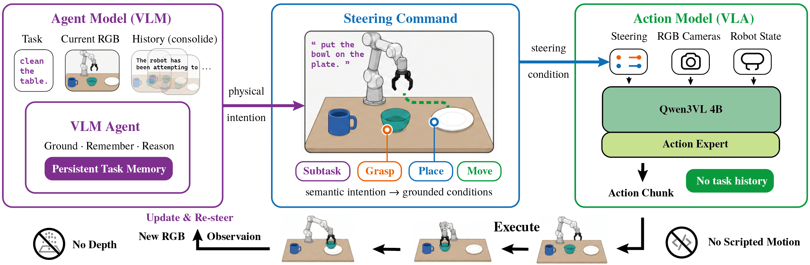
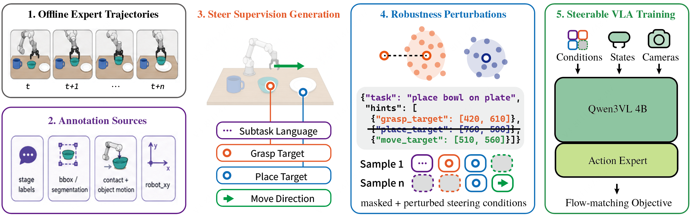
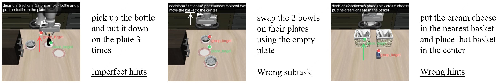

2AM: Grounding Agent-Side Memory
as Guidance for Steerable Action Models
in Long-Horizon Manipulation
KU Leuven / Meituan / Flanders Make@KU Leuven
Long-horizon manipulation requires memory.
Not necessarily inside the action policy.

Less tool breadth.
More interface bandwidth.
A policy failure does not always mean the robot lacks the skill. A language-only instruction may leave out the object, destination, or motion that the Agent already has in mind.
2AM studies a deliberately constrained alternative: keep task memory in a multimodal Agent, and let a single RGB-based Action Model execute every task-relevant movement. The Agent communicates its intention through language and optional image-space hints—not trajectories.
Language says what.
Hints specify the arguments.
Three optional 2D cues, with distinct roles and time scales. The learned policy remains responsible for the motion.
Grasp Which object next?
Bind an object instance before acquisition. Remove the cue once the object is held.
Place Which destination?
Keep the destination explicit across transport, even when the wrist view cannot see it.
Move Where is useful progress?
Provide a near-term image-space cue—not a prescribed path or end-effector trajectory.
{
"task": "pick up the bowl",
"hints": [
{"label": "grasp_target",
"point_2d": [420, 610]},
{"label": "move_target",
"point_2d": [450, 560]}
]
}Before contact: identify the bowl and suggest near-term progress.
Coordinates are illustrative. Missing fields are omitted.
Learn to follow imperfect steering.
Recover hint supervision from demonstrations. Train with nonempty condition dropout, Gaussian point noise, and temporal jitter. One model learns to act from incomplete or imprecise guidance.

Better progression.
Stopping remains hard.
A controlled case study on ten memory-dependent manipulation tasks. Completion and success are reported separately.
| Method | Strict SR | Relaxed SR | Completion |
|---|---|---|---|
| SlotSSM best reported baseline | 0.00 | — | 14.80 |
| π₀ reproduction aligned motor backbone | 12.25 | 37.42 | 70.79 |
| Language-only subtask same Agent, no 2D hints | 7.25 | 19.42 | 53.72 |
| 2AM language + grounded hints | 11.83 | 63.00 | 76.29 |
Strict SR requires the requested task order and repetition count; overshoot fails.
Relaxed SR accepts reaching the complete ordered goal before later overshoot.
Completion measures the fraction of ordered subgoals reached.
Against the aligned reproduction, 2AM adds 5.50 points of completion and 25.58 points of relaxed success. Strict success is slightly lower (11.83% vs. 12.25%). Grounded hints improve progression, but do not by themselves solve exact termination.
Where the interface can still fail

Results and experimental protocol: read Section 4 ↗
Build on this work.
If 2AM is useful for your research, please cite the paper.
arXiv:2609.11308 ↗@misc{hu20262am,
title = {2AM: Grounding Agent-Side Memory as Guidance
for Steerable Action Models in Long-Horizon Manipulation},
author = {Yutong Hu and Fengjiao Chen and
Xuezhi Cao and Renaud Detry},
year = {2026},
eprint = {2609.11308},
archivePrefix = {arXiv},
primaryClass = {cs.RO},
url = {https://arxiv.org/abs/2609.11308}
}